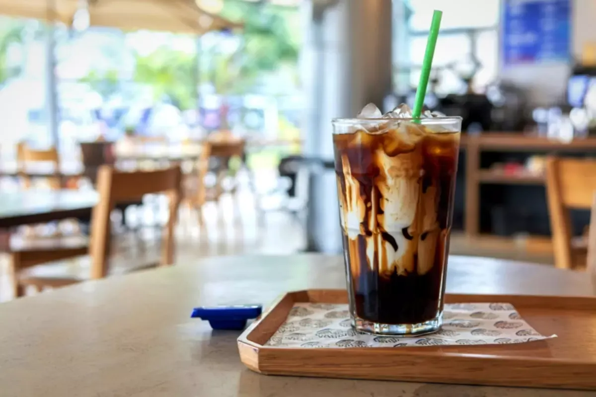
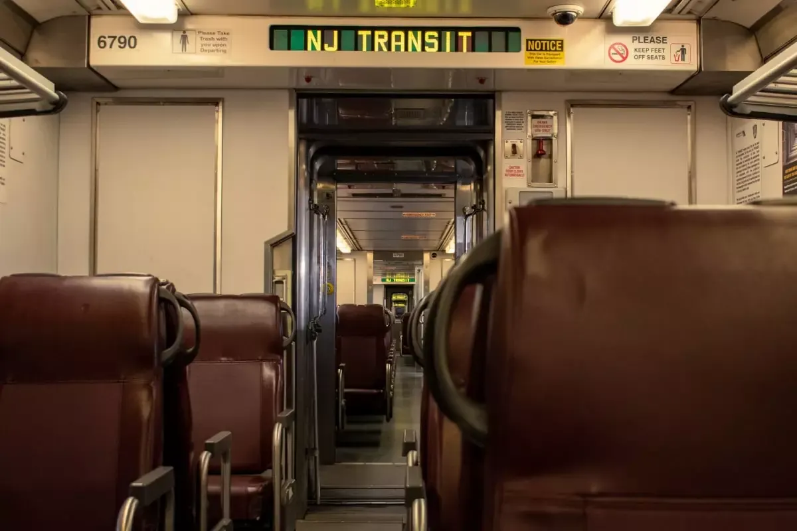

Jersey City is a lively hub rich with movement, culture, creativity, and pockets of calm. With close proximity to NYC and other major cities, it’s often overlooked despite its many advantages and opportunities.
Our dispensary in Jersey City is a wonderful reflection of this city’s vibrant energy and warm community feel. We pride ourselves in providing a welcoming space for people to recharge, connect, and unwind with cannabis as a tool.
Like cannabis, food and drink can go beyond just sustenance and offer a beautiful way for people to take care of themselves and their communities. Whether you’re a local living near our Jersey City dispensary or just passing through town on a trip, we invite you to explore the city’s amazing gems and hotspots to make the most out of this one-of-a-kind place.
To save you time, our NJ dispensary team put together this dining guide for Jersey City:
Jersey Restaurants You Need to Try
As a rich cultural hub, Jersey City is packed with more cuisines than you can imagine. Many of the restaurants on this list are locally owned and rooted in the community, with food that leaves you planning your return after you finish your plate.
Razza Pizzeria
For the discerning pizza lover, Razza Pizzeria is sure to satisfy with its artisan, wood-fired pies and seasonally inspired small plates. Their dining room menu changes daily based on seasonality and availability, meaning you’ll only get the freshest options with each visit. Locals are especially fond of Razza’s delicious pasta dishes.
Complete with a cozy bar section, the vibe here is warm, rustic, and always buzzing. The elevated menu, seasonal ingredients, and thoughtful sourcing bring locals and visitors back again and again.
While it’s always a good time at Razza Pizzeria, we recommend stopping by for a weeknight dinner or an early weekend visit to beat the rush. The restaurant is about 1.4 miles away from our Jersey City cannabis dispensary, making for a 25-ish minute walk or 6-10 minute drive downtown toward Grove Street/Van Vorst Park.
Masala Cafe Chettinad
Jersey City is aptly nicknamed “Little India” for our India Square, a South Asian-focused commercial and restaurant district in the Bombay, Journal Square, and Marion Section neighborhoods.
As a primary destination for Indian immigrants, you can rest assured that the Indian food here is amazing. Masal Cafe Chettinad is a wonderful example, with traditional South Indian cuisine in a casual chain restaurant setting. With delicious seafood, biryani, and dosa options, this spot is perfect for those who like spicy, authentic Indian food.
While a lot of US Indian restaurants focus on North Indian cuisine, this restaurant offers the best of both worlds combined with fast service and generous portions. We recommend visiting at lunch or early dinner, but any time of the day will satisfy.
Located just a mile or so from our Jersey City recreational dispensary, you can take a 20-25 minute walk or a 5-8 minute drive from The Retreat to get to this casual, colorful, and comforting establishment.
For other great Indian restaurants, check out Rasoi and Swadist.
Corto Jersey City
For a delicious, casual neighborhood option, check out Corto Jersey City. This place offers seasonal Italian cuisine in an airy venue with a vintage vibe and has rightfully earned its title as a top-rated Italian restaurant in the city.
With handcrafted pasta and seasonal cuisine, Corto New Jersey offers an intimate, understated, and quietly special vibe in a cozy, BYOB setting. Locals love it because the plates are thoughtful, fresh, and perfectly balanced thanks to the well-designed rotating menu. Plus, it feels like a neighborhood secret.
Perfect for date night or a relaxed weekend dinner, Corto New Jersey is just 1.1-1.3 miles away from our recreational cannabis dispensary. To get there, take a leisurely 22-28 minute walk or drive 6-10 minutes toward downtown.
Peppercorn Station
For spicy Sichuan fare with a modern twist, look no further than Peppercorn Station. It’s a low-key, no-frills dining experience presented in a sleek space with vintage accents and bold flavors. It’s the kind of place you want to gatekeep once you try, because if you know, you know.
The food is consistently delicious and ideal for family-style ordering so you can try a bit of everything. Take your friends for a delicious dinner and try the many bold flavors that make up this delicious restaurant.
To get here from our Jersey City cannabis dispensary, walk about 20-25 minutes or drive 5-8 minutes near the Grove Street corridor. It’s about a mile or so from our store.
DomoDomo
For excellent sushi, handrolls, and other Japanese cuisine, check out DomoDomo. This unique spot provides a creative dining experience for the most discerning of palates in a modern, energetic, and refined but unstuffy atmosphere.
Locals return again and again for celebrations, special meals, or just an elevated night on the town. It’s the perfect spot for a nice dinner date or polished night out on the town.
Located about 1.5 miles from our dispensary, you can walk about half an hour or drive 8-12 minutes toward the Greene Street area to dine at DomoDomo. We highly recommend making reservations, as this is a popular spot.
Coffee Shops & Quick Bites in Jersey City

If you need a mid-day pick-me-up, Jersey City is loaded with many great quick bites and coffee shops. Casual eateries, bakeries, and coffee shops are an excellent place to recharge for the day and pair well with an energizing cannabis boost (daytime strains or edibles, anyone?)
Diesel & Duke
You can find burgers, fries, and shakes galore at Diesel & Duke, a casual and modern establishment known for its beloved fried Oreos. It’s lively, casual, and unmistakably neighborhood-driven.
If you’re looking for a midday boost, go for the cold brew or a drip coffee. If you’re sticking around, go ahead and get the burgers and fries, too. You won’t regret it.
Whether you’re looking for a casual meet-up place or just need some fuel between errands or people watching, Diesel & Duke is sure to keep you going.
About 1.2-1.4 miles from our NJ dispensary, you can walk a little under 30 minutes or drive 7-10 minutes toward Grove Street to get there.
sam a.m.
For a spot that’s bright, welcoming, and bustling with weekend energy, check out sam a.m. Grab a strong cup of coffee and a brunch plate or baked good and you’ll be set for a morning or midday boost.
Whether you need a quick pick-me-up or are looking to make casual brunch plans with friends, sam a.m. is an excellent choice. If you’re going in the morning, be prepared to wait–but we think it’s well worth it.
To get there from our New Jersey cannabis dispensary, head toward 112 Morris Street. It’s about a mile away, taking around 20 minutes to walk or 5-7 minutes to drive.
Bwe Kafe
With locations in Jersey City and Hoboken, Bwe Kafe is a wonderful place to recharge with its Haiti-sourced coffee beans and sweet and savory treats (including some gluten-free options).
Offering the classic pour-over method for hot coffee, Japanese slow drip for iced coffee, and Caribbean-inspired bites and pastries, Bwe Kafe is a culturally rich establishment with a fun, creative edge. It’s warm, cozy, and great for quiet reflection or an intentional morning.
Located about 1.3-1.6 miles from our recreational dispensary, you can get there by walking about 26-32 minutes or driving 7-10 minutes near River Drive South/Lincoln Park.
Crema
Featuring specialty coffee, pastries, cake, and more, Crema is a perfect spot to cozy up for work or connection. It has a modern, minimal, and calm vibe that’s ideal for slowing down, focusing, or enjoying a quiet moment to yourself.
Whether you need a bit of time to relax and unwind or want to journal or people watch, this cafe is your go-to spot for a midday pause.
To get there from The Retreat, drive or walk 1.7-2 miles near Duncan Ave. It’s about a 35-45 minute walk from our recreational dispensary in Jersey City, or an 8-12 minute drive.
Prato
For a midday boost in a charming, European-inspired, and relaxed setting, visit Prato. This bakery is known for its beautifully crafted coffee and pastries, as well as its refined yet approachable atmosphere.
Perfect for a morning coffee ritual, solo reset, or gentle afternoon break, Prato is the kind of place you visit once and immediately add to your regular rotation.
To get there from The Retreat, head 1.3-1.6 miles near the Montgomery/Newark corridor. It’s about a 25-32 minutes walk or a 7-10 minute drive from our dispensary.
For more coffee shops in Jersey City, check out Hoboken Girl’s guide to all the different coffee shops in the city.
Bars & Lounges for Adults to Enjoy in Jersey City
Jersey City is a fabulous nightlife destination because it’s not all about excessive commotion but rather rooted in feel-good connection, conversation, and ambiance. The following bars respect the art of a good drink and a welcoming environment:
Departed Soles
As Jersey City’s first modern brewery and tasting room, this dog-friendly establishment is the perfect place to stop for a relaxed and social vibe. Plus, it’s easily accessible by the NJ Transit, PATH Train, Light Rail, and ferry.
With creative, small-batch beers brewed on site, this spot provides a strong sense of local pride. Plus, it offers gluten-free beer options so all visitors can enjoy a cold one.
Whether you need a casual hangout spot, want a post-work drink, or are just seeking a casual, laid-back spot for a night out with friends, Departed Soles is an excellent choice.
To get there from The Retreat, walk roughly 25-32 minutes or drive 7-10 minutes near Grove or McGinley Square area.
The Alps
For a casual bar option with great cocktails, beer, wine, liquor, and good food, visit The Alps. As a European-inspired wine bar, this spot is intimate and low key with just enough good energy to feel special.
Featuring a thoughtful selection of natural wines and small plates among other delights, The Alps is a great choice for date nights, quiet conversations, or a slowed-down evening.
To get there from The Retreat, walk about 24-30 minutes or drive 6-9 minutes from our dispensary, typically around the West Side/Journal Square area.
Harry’s Daughter
Known for its eclectic decor and creative recipes, Harry’s Daughter is a fashionable venue with home-cooked Caribbean cuisine and craft cocktails in a tropical space.
The space is warm, lively, and welcoming, without ever feeling overwhelming. The Caribbean-inspired cocktails and bold flavors bring soul to any occasion, from celebratory dinners to vibrant nights out with friends.
From our Jersey City dispensary, drive 6-9 minutes or walk 25-30 minutes toward the Paulus Hook/Montgomery neighborhood.
Low Fidelity
For a chill, stylish cocktail bar experience, try out Low Fidelity. With original cocktails and Detroit-style pizza, you can’t go wrong here.
This place is moody, cozy, and laid back–perfect to unwind after a long day. The vinyl-focused listening bar atmosphere and carefully curated drinks make an excellent venue to have intimate conversations or a low-key night out.
To get there from The Retreat, walk about 28-35 minutes or drive 8-11 minutes near Journal Square and Hamilton Park.
Getting Around Jersey City

Another great benefit of Jersey City is how easy it is to navigate. Most places in Downtown Jersey City and Journal Square can be reached on foot, by bike, by scooter, or by rideshare.
If you choose to walk downtown, you can get a great feel of all the neighborhood vibes. But if you’re looking to cut travel times, there are plenty of transit options, such as buses or the PATH to Grove Street.
Cannabis Safety Tips in NJ
Adults 21 and older can enjoy Jersey City’s wonderful selection of legal cannabis. You can smoke in private spaces, though landlords are allowed to prohibit smoking for renters. In any place where cigarette smoking is permitted, you can enjoy a joint unless otherwise specified.
Be sure to stick to cannabis use best practices, though. Don’t drive under the influence of cannabis, as the same laws of impaired driving apply to this plant.
It’s why we recommend walking for so much of our dining guide. You can get a good feel of the city while taking a lovely stoned walk to lunch, dinner, or your midday coffee boost. Few things pair better with weed than a good walk and good food.
Just know that wellness looks different for everyone. If you’re new to cannabis or don’t know what products will be best for your needs, don’t worry. Our Jersey City dispensary staff is here to help you find quality products at great prices.
Find Your Retreat, Right Here in Jersey City
When you stock up at The Retreat and then make use of the many great dining options in Jersey City, you are creating a beautiful ripple effect in our community. Your money goes to people who work hard for our city to stay vibrant and fun, allowing these establishments to continue offering great selections.
The Retreat is part of this lovely community’s ecosystem of love and care. We are here to help people find the best products to help them rest, recover, and get the most out of their days–however that may look.
We hope you’ll use this dining guide to explore the city and support its many local gems. And if you want to enhance your city adventures, don’t forget to stop by our Jersey City cannabis dispensary.